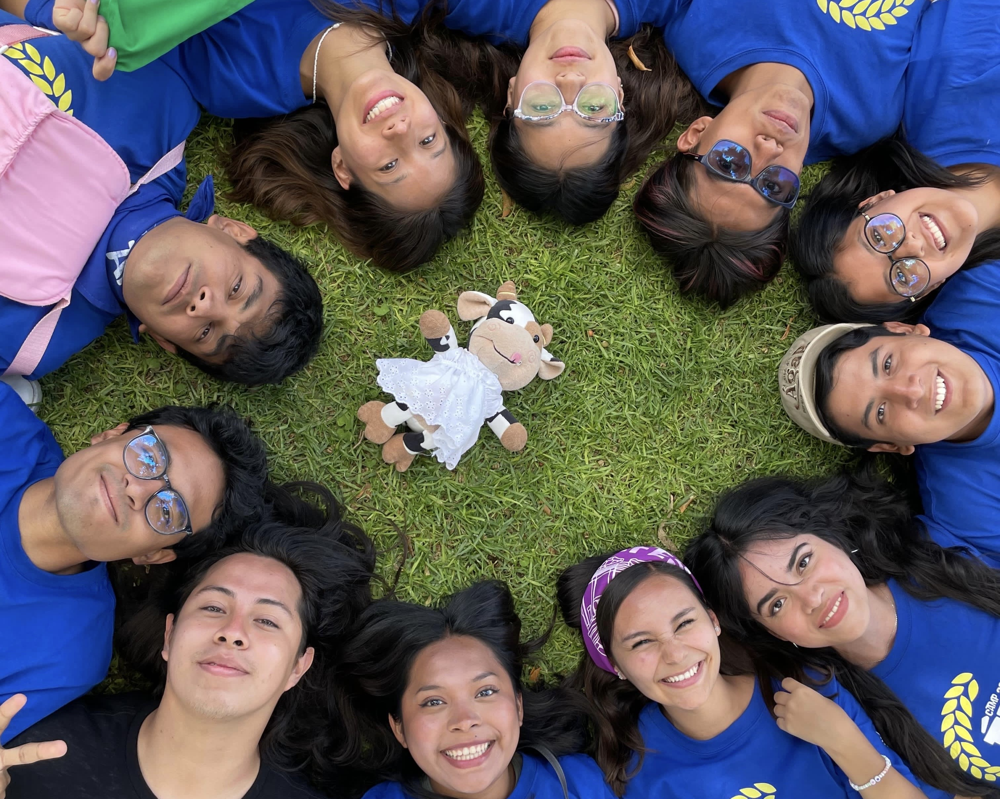
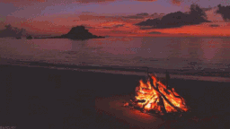
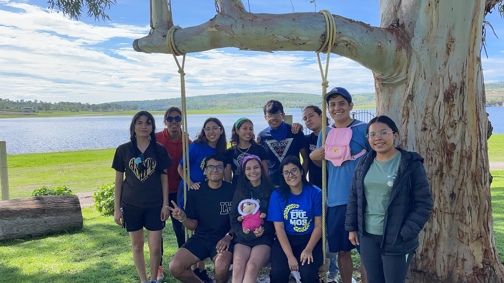
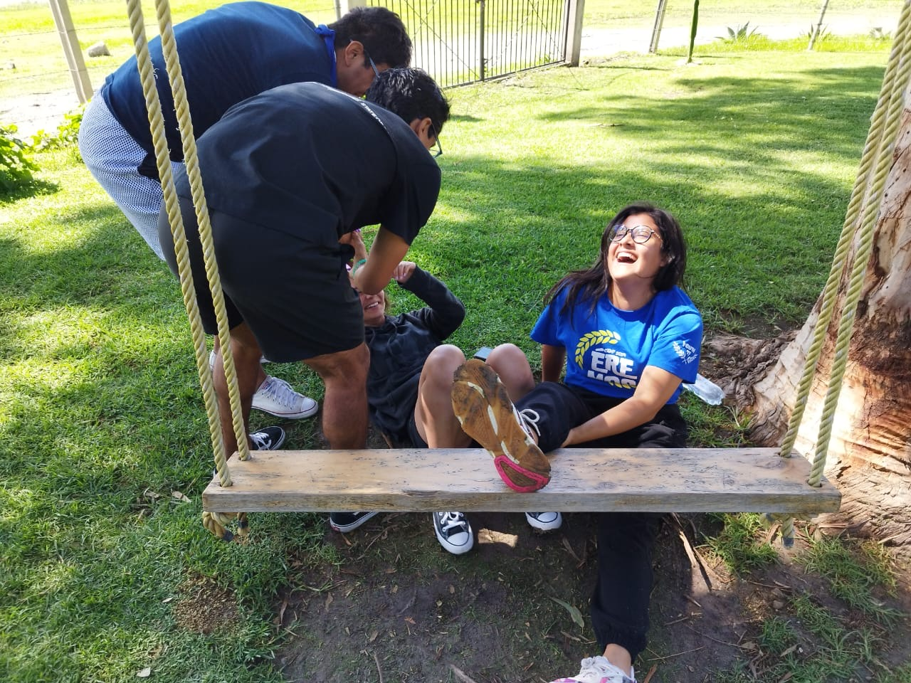
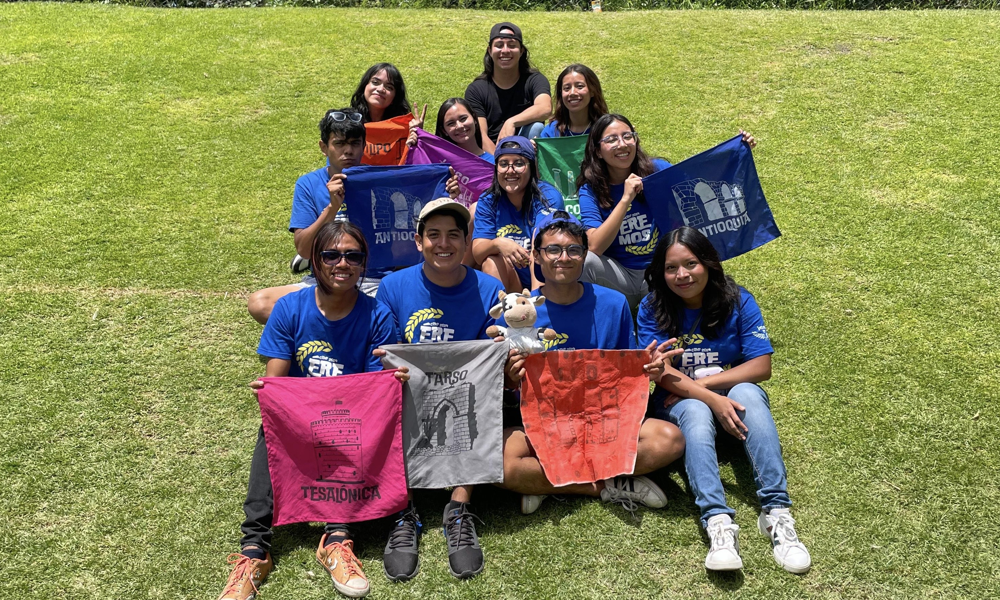

El verano con mis amigos
Imagen simple
Ellos son mis amigos: Keren, Pablo, Karla, Toño, Hanni, Keyla, Pepe, Aín, Beker, Jessi y yo. Este verano fuimos juntos a un campamento de jóvenes de cinco días.
Aunque estuvimos en equipos diferentes, cada tiempo libre que teníamos lo pasábamos juntos. Convivir todos durante casi una semana nos unió muchísimo.
Fogata
Imagen gif
Un momento muy bonito que vivimos juntos fue cuando hicimos una fogata. Hablamos de muchas cosas. Platicamos de situaciones personales que nos estaban lastimando y cosas que no habíamos contado antes. Nos abrazamos, cantamos y jugamos juntos toda la noche.

Foto bonita, caída trágica
Imagenes flotantes izquierda y derecha
Uno de esos días, después del desayuno, decidimos ir junto al lago a platicar y pasar el tiempo juntos.
En uno de los árboles había un columpio lo suficientemente grande para sentarnos tres personas. Quisimos tomarnos una foto ahí para tener un recuerdo de nosotros junto a la bonita vista que teníamos.
Aín, Karla y yo nos sentamos en el columpio para la foto, y los demás nos rodearon. Después de tomar la foto Aín, Karla y yo nos quedamos en el columpio y quisimos columpiarnos los tres juntos.
Salió mal. No pudimos estabilizarnos y terminamos cayendo de espaldas y nos llenamos de lodo.
Como Aín y Karla estaban en los extremos podían agarrarse de las cuerdas del columpio, pero yo, por estar en medio, sólo podía agarrarme de ellos.
Cuando nos caímos ellos pudieron agarrarse antes de caer, pero yo no. Recibí el golpe más fuerte en la espalda y terminé con una contractura. Pero las risas no faltaron (:
Lugar bonito, vista bonita
Imagen de fondo
Estuvimos de campamento del 10 al 14 de julio de este año, 2024. El lugar donde fue el campamento se llama "Oasis de agua viva". Está en valsequillo, más adelante de Africam Safari.
Es un lugar muy grande y muy bonito. Está junto al lago, hay muchos árboles y tiene alberca.
En las mañanas y en las noches hacía un poco de frío, por la cercanía con el lago, pero en las tardes el clima se sentía muy cálido.
Video bonito
Imagenes como vinculo
En el campamento hubieron personas tomando fotos y videos de todos nosotros, no sólo mis amigos y yo.
En el siguiente ícono está un video recapitulando todas las actividades y juegos que tuvimos uno de esos días.

Equipos
Imagenes con filtro
En total hubieron 10 equipos diferentes identificados con un color cada uno.
Mis amigos y yo estuvimos así: Jessi y yo en el equipo morado (éfeso); Aín y Keren en el equipo naranja (filipo); Hanni, Pepe y Beker en el equipo azul (antioquía); Toño en el equipo rosa (tesalónica); Karla y Pablo en el equipo gris (tarso) y Keila en el equipo verde (corinto).
